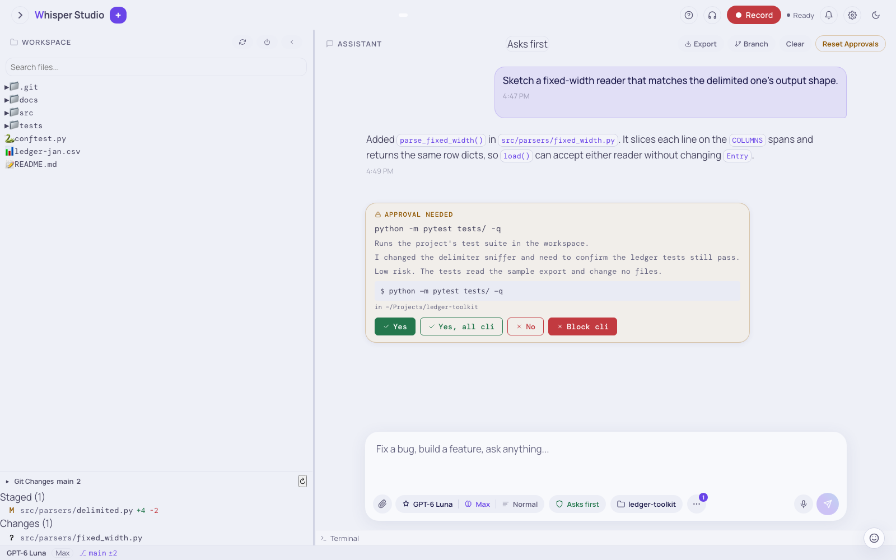

Permissions & approvals
One control sets which actions the assistant can do without a question. The range is from a read-only planner to a mode with no questions in the workspace. Below the control are approval cards, per-tool rules, and guards that stay on in all modes.
When the model asks for a tool, the call does not run immediately. The app first gives the call one of three results: allow (run now), ask (stop and show a card), or deny (refuse). Your permission mode and your per-tool rules set the result. Click a box in the diagram to see where a call goes.

The main control: the Permissions control
The Permissions control is below the composer, next to the "How it thinks" control. It shows the current mode. Click it to open the panel What runs without asking. Select a mode in the panel. The Manage rules… link opens Settings › Permissions.
You can change the mode at any time during a conversation. The server stores the mode in
permissions.json in the data folder of the app. For the Mac app, this
is ~/.whisper/data/permissions.json. For a source install, it is
data/permissions.json in the checkout. The next tool call uses the new
mode.
The /plan command turns plan mode on or off. The mode and the rules apply to the
user only. A project settings file cannot change them. All the rules on this page also apply to
subagents and scheduled jobs, because they use the same gate.
The six modes
Select the mode that agrees with your trust in the current task. Asks first is a good start: you can read all files, but each change waits for a click. The first column shows the name in the Permissions control and in the status bar.
| Mode | Behavior |
|---|---|
Asks first (default) | Reads run. Each file write and each command asks first. This is the usual mode. |
Auto (auto) | Reads run. A classifier approves each write and command, or asks you. The config keys auto_mode_allow, auto_mode_soft_deny, and auto_mode_environment hold its lists. The assistant can change them with config_set, which follows the permission mode. |
Plan (plan) | Read-only. The app blocks file edits and commands. The assistant gives the changes as a plan. |
Accept edits (acceptEdits) | File writes and new files run without a question. Deletes and commands ask. Use it for a long edit task. |
Bypass (bypassPermissions) | No questions, in the workspace and outside it. Only a destructive GitHub action and a tool of an MCP server that you marked for approval ask. A category mode that you set also stays in effect. |
"Don't ask" (dontAsk) | The app refuses writes and does not show a card. Only read-only tools run. |
The same six modes are in Settings › Permissions, below Permission Mode. Each option shows the mode name and a short help text, for example "Asks first: Reads are allowed. Every file write and command asks first." Select a mode and click Save Mode.
Reads do not ask, in any mode. A file list, a file read,
grep, and glob always run, also in "Don't ask" mode. The only exception is a credential store,
for example the Keychain or ~/.ssh (see
Credential stores). The important difference is read
and write. A write changes files, runs a command, or changes Git or the
configuration. Each mode controls the writes.
Plan mode
Plan mode is the strictest mode. The app blocks the main write
tools before dispatch: ws_write_file, ws_create_file,
ws_edit_file, ws_delete_file, ws_run_command, and
ws_merge_worktree. Thus no card shows. The assistant can read your full project and
give a plan. When you are ready, change to Asks first or Accept edits.
The circuit breaker of Auto mode
The Auto classifier examines one tool call at a time. A circuit breaker for each turn counts the verdicts. It trips after 3 "confirm" verdicts in sequence, or after 5 in the last 10 classified calls of the turn.
Then each call in the rest of the turn asks you, and the app does not use the classifier. A notice tells you this and gives a resume button for the rest of the turn. The breaker does not change your saved mode. Each new turn starts with a new count.
Credential stores
Credential stores are the locations of your secrets. Examples are the login Keychain,
~/.ssh, ~/.aws,
~/.gnupg, git credentials, browser profiles and cookies, shell
histories, and password managers. A read of a credential store obeys its own rule:
| Mode | Read of a credential store |
|---|---|
| Bypass | All read tools and commands read them without a card. Commands run with no sandbox, so they can also write them. |
| "Don't ask" | Refused. |
| Asks first, Accept edits, Plan, Auto | You approve each read. The Auto classifier does not decide it. A "Yes, all" for commands does not approve it. |
Some commands must read a store, for example security find-identity,
codesign, or notarytool, which use the login Keychain. For these
commands, the card summary starts with "READS THE KEYCHAIN AND CREDENTIAL STORES:". This card
does not keep your answer for the session. Subagents and scheduled jobs cannot read the stores
outside Bypass, because no person can answer the card. Outside Bypass, no mode lets a tool write
to a credential store. In Bypass, shell commands run with no sandbox and can write there, but
ws_write_file, ws_edit_file, and ws_delete_file still
refuse a credential store outside the workspace.
Per-category modes
The global mode applies to all actions. To set a different mode for one type of action, use the Per-Category Defaults section in Settings › Permissions. Each row is one approval category. A mode in a row replaces the global mode for that category. A row with Use global setting uses the global mode.
| Row | Actions |
|---|---|
| File writes | Writes and new files in the connected workspace, and new Word, Excel, PowerPoint, or PDF files there. |
| File deletes | File deletes. |
| Shell commands | Commands, Python runs, the terminal, the AWS CLI, and the git tools that write: commit, push, pull, checkout, merge, branch, and stash. |
| Saving files outside the workspace | The direct save flow, for example "save this to my Documents". It has its own category. Thus a "Yes, all" for workspace writes does not approve it. |
| Folder access | A folder outside the connected workspace that the app opens as the workspace, or that a workflow uses. The app asks one time for each folder. The approval applies to all the contents of the folder. A read of a file or a folder does not ask, except for credential stores. |
| Worktrees | No tool that you or the assistant can call uses this row now. |
| Live preview | The start, control, and stop of a dev-server preview. A named config from .whisper/launch.json with a command that you approved one time does not use this row. See below. |
| Word/Excel/PowerPoint scripts | The office_script tool, which runs Python code on your documents. |
| GitHub, GitHub (destructive) | Usual GitHub changes, and the changes that you cannot revert. The destructive row is fixed and shows "Always asks (cannot be overridden)". |
| Workflow runs | The start of a new ultracode workflow script. See below. |
mcp | Calls to MCP tools that ask for approval, as set in the settings of each MCP server. |
mcp-elicit | Your answer to a request for input from an MCP server. You answer it in Settings › MCP servers. The chat gate does not use this row. |
The backend sends this list, so it agrees with the actions that exist. Click Save Category Settings to apply the changes.
A category mode can be less strict or more strict than the global mode. For example, set Accept edits for writes and Asks first for commands. Or set Asks first for deletes, so that each delete asks also when the global mode is Bypass. The app applies the category mode before the Bypass check. Thus a stricter category mode stays in effect.
Do not expect a mode to approve a github-destructive
action. This category always asks for your approval. It includes repository and
branch deletes, PR merges, archives, renames, and API deletes. No mode, category mode, session
approval, or rule can approve these actions. In "Don't ask" mode, the app refuses these
actions.
The workflow category
The workflow category controls the start of a new
ultracode workflow script. By default, a new script stops at
its phase-preview approval card. With auto, a new script starts without the card
if its budget is 600,000 output tokens or less. A larger budget asks. With
bypassPermissions, the card does not show. With dontAsk, the app
refuses the start.
Trusted saved workflows and resumed runs do not use this gate. No mode changes the limits of the runtime: the concurrency semaphore, the agent cap, and the token budget. See Approval and trust for the full flow.
Previews from launch.json start in all modes
The assistant can start a live preview by name from
.whisper/launch.json in the workspace. You approve each command of a
config one time. The first start of a command obeys your mode, as all commands do. If a card
shows, the card gives the exact command. The card also tells you that after approval, the
command starts without a question.
After you click Yes, the command starts without a card in all modes. This includes Asks first, Auto (without a classifier call), Plan, Accept edits, Bypass, and "Don't ask". It also ignores the Live preview category row. All later previews of that config start immediately, in this chat and in later chats.
The approval applies to the command, not to the file. A launch.json
file can come with a repository that you clone or pull. An edit without a card can also write
it. Thus a config that nobody approved always shows the card.
The app keeps the approval for each workspace and for the exact command. If the program or the arguments change, the next start asks again. The same command in a different workspace also asks.
Only your own answer to a card records the approval: a click, or a spoken yes in voice mode.
A start that Bypass, a "Yes, all preview", or the Auto classifier allows records nothing. The
app keeps the approvals in launch_trust.json in its data folder. If
you delete that file, each config asks one more time.
The app runs the command that it examined. If launch.json changes
while a card waits, Yes runs the command on the card, not the new command. If the file changes
after the assistant asks for a start, the start obeys your mode.
All other preview actions obey the mode:
- An ad-hoc command, with the program and its arguments and no name, asks, goes to the classifier, or is refused, as your mode sets.
- In "Don't ask", the app refuses a config that you did not approve. Approve its first start one time in a different mode.
- A
cwdoutside the connected workspace makes a named start obey the mode. - A name that is not in
launch.jsonfails with an error.
Outside Bypass, your own choices have priority over this rule. A custom rule for
preview_start with deny or ask stays in effect. Block preview on an approval
card refuses named starts for the rest of the session. Bypass allows all actions, as for other
actions.
The hard floors apply in all modes, to the command of the config. If an entry deletes files
outside the workspace, it always shows a card. An example is an rm on a path in
your home folder, directly or in sh -c. An entry that only deletes a build folder in
the workspace is a usual command.
Approval cards
When a call gets the result ask, the turn stops. An approval card shows in the chat, at the position of the tool call. The card shows the exact action, not a general label:
| Card type | Shows |
|---|---|
| Diff | A line-by-line diff of the file edit. After the write, click the diff pill of the call in the chat. The diff dialog has an Undo button. Undo puts back the file as it was immediately before that write. |
| Command | The exact shell command and its folder. |
| Text | A plain summary for all other actions. |
If the file changed after that write, Undo does not change the file and shows the reason. Undo the newest write first. The card does not have an Undo button, because the file does not change before you approve. The app keeps the undo copy until it restarts or you change the workspace.
Each card has a short risk label. When more actions wait, the card shows a "N more pending" counter. Many cards also show one sentence about the risk of the call. A fast model writes this sentence. If the model does not answer in 3 s, the card shows without the sentence. The card has these buttons:
Yes
Approves only this call. The turn continues from the point where it stopped.
Yes, all <category>
Approves this call and all later calls in the same category for the rest of the session, for example all writes.
No
Refuses this call. The assistant gets the refusal and can change its approach.
Block <category>
Refuses this call and all later calls in that category for the session, without more questions.
An action with a hard floor always asks. Its card does not show "Yes, all" and "Block". It shows "This action always asks." instead.
A session approval or refusal comes after the Bypass check. Thus after "Yes, all write", the app does not ask for writes again, also in Asks first mode.
The category on the buttons is the same category as in the per-category modes. Direct saves to
your own folders, for example "save this as a Word doc", use their own save
category. Thus "Yes, all write" does not approve files in Documents or Downloads. And "Yes, all
save" does not approve workspace writes. See Saving files and
creating documents.
The server, not the browser, controls the approval. The server
keeps the turn paused until the client sends the exact registered action for that
tool_use_id. Thus you cannot approve an action that the server did not stop, and
a page cannot make a false approval. See Approval &
permissions for the pause and the resume.
Per-tool rules
Modes apply to many actions. For a fixed decision for one tool or one command, write a per-tool rule in Settings › Permissions. The app examines the rules before the default of the mode. Thus a rule has priority over the mode, with one exception (see below). Each rule names a tool, matches its input, and sets an action:
| Field | Meaning |
|---|---|
tool | The name of the tool, or * for all tools. |
pattern or prefix | A glob (pattern) or the literal start (prefix) of the key field of the tool. The key field is the path for file tools, the command for the shell, and the branch for git. |
action | allow, ask, or deny. |
justification | An optional note with the reason for the rule. The rule list shows it. It does not change the match. |
Example: allow all git commands without a question, but confirm each delete:
{ "tool": "ws_run_command", "prefix": "git ", "action": "allow" }
{ "tool": "ws_delete_file", "pattern": "*", "action": "ask" }
{ "tool": "ws_delete_file", "pattern": "*.log", "action": "deny" }The app examines the rules from the top to the bottom. The first match applies, so the sequence is important.
The rule editor has these fields: Tool Name, Match Type (Pattern or Prefix), the Pattern or the Prefix, Action (Allow, Ask, or Deny), Justification (optional), and Test input (JSON). Save Rule stores the rule. Delete on a rule in the list removes it.
Do a test of a rule
You can do a test of a rule before you save it. Use the Test this rule button in the rule
editor. Give a tool name and an input, for example ws_run_command with
git push origin main. The test uses the same match logic as the live gate. It shows
the matched rule, its position, and the decision. The test can use your saved rules or a draft
rule that you did not save.
The app examines a call in this sequence:
- The hard floors:
github-destructiveand an MCP server that you marked for approval. Outside Bypass, also a delete outside the workspace, a write outside the sandbox, and a command in your visible terminal. - The app folders: a write there runs. A delete there runs only in Bypass.
- The category mode, if you set one. It replaces the global mode.
bypassPermissions: all actions run, in the workspace and outside it.- A trusted skill script.
- Your session choice ("Yes, all" or "Block").
- Your custom rules.
- A preview that starts by name from
launch.jsonwith a command that you approved one time. - The default of the mode.
Thus bypassPermissions has priority over a deny rule. A stricter
category mode has priority over Bypass. The hard floors have priority over all items. A delete
in the workspace, for example rm -rf dist, is a usual command. It obeys the mode.
Bypass runs it, and "Yes, all cli" approves it.
Writes in the app folder do not ask
The app folder contains the files of the app. For the Mac app, this is
~/.whisper. It contains your rules, WHISPER.md, the
scratch folder of each session, memory, and the data/ folder. A new file, a write, or an edit there shows no card in
any mode. No category mode changes this. For a source install, the same rule applies to the
app folders in the checkout, for example data/ and
rules/, not to the full checkout.
Plan mode has one difference. Memory updates run there without a card, but
rules_write shows an approval card. A delete in the app folder runs without a card
only in bypassPermissions. The other modes apply their usual delete rule. Your
workspace files obey the mode and the rules above.
The config and permission files of the app are an exception. A write, a save, or a delete of one of these files obeys the permission mode. Bypass allows it, "Don't ask" refuses it, Auto uses the classifier, and the other modes ask.
A session uses only its own scratch folder. The file tools refuse the scratch folder of a different session. A command in the sandbox can write in the scratch folder of its own session.
The guards that stay on
Modes and rules control consent: if the app asks you or not. Below them are two
guards. These guards are the real security boundary. The command validator applies in all
modes. The sandbox applies in all modes except bypassPermissions.
Commands run in the sandbox, except in Bypass
Each shell command and each Python run is in the macOS kernel sandbox
(sandbox-exec). The sandbox applies the file and network policy at the OS level.
An approval lets a command run. It does not remove the sandbox. If the sandbox is
not available, the app does not run the command.
In Bypass, commands run with no sandbox, the same as in Claude Code. The subagents and
workflows that a Bypass chat starts also run with no sandbox. Scheduled jobs keep the
sandbox. Thus in Bypass a command can run /bin/ps, run a test suite that uses
sandbox-exec, and write outside the workspace.
Plan mode and read-only agents keep the sandbox, also in Bypass. If you approve a card, the command uses the mode of the turn that made the card. It does not use the mode at the time of your click.
The app blocks destructive patterns
A command validator refuses some destructive commands before they run:
a delete of a protected folder, mkfs, dd to a device, and
redirects into /etc/. It also refuses backticks, and a $(...) that
runs a command that is not read-only. The validator refuses these commands in all modes.
A protected folder is the root folder /, a folder directly below it (for
example /System, /Users, or
/Applications), and your home folder. The validator reads the
target of the delete, not one spelling. It refuses rm -rf /,
rm -fr /, rm --recursive --force /, rm -rf "/",
find / -delete, rm -rf ~, and cd / && rm -rf usr.
A folder below a protected folder, for example ~/Documents/old,
is not protected. The file tool ws_delete_file also refuses a protected folder
in all modes.
The validator also refuses access to sensitive paths and files, except in a run that can read credential stores. It removes control characters and deceptive Unicode whitespace.
It also limits the number of commands in one call. The validator
is defense in depth. It stops simple cases. sandbox-exec stops a determined
attacker. ws_read_file and ws_list_directory can read all files and
folders on your Mac by absolute path, except credential
stores.
Outside Bypass, three types of command always show a card:
- A command that deletes outside the workspace. Examples are
rm,rmdir,shred, andfind -delete, also behindsudoorxargs. The target can be your home folder, a parent of the workspace, or a variable that the app cannot resolve. It can also be a different location outside the workspace and the app folder. - A command that asks for full disk write access instead of the usual limit to the project.
- A command that the assistant types into your visible terminal. That terminal runs in its current folder, and the OS does not limit its writes.
A rule, a "Yes, all", or a trusted skill cannot remove these cards. Outside Bypass, an
unattended agent cannot run a delete. In the workspace, the mode decides: the other modes
handle rm -rf dist as a usual command.
In Bypass, these three types of command run without a card. A subagent or a workflow script
of the session also runs a delete without a card. The validator still refuses a delete of a
protected folder. A category mode that you set for cli can only make Bypass
stricter: if it is not Bypass, these commands ask again. A category mode of Bypass does not
remove these cards when the session is in a different mode.
For a relative path in a delete, the app uses the folder of a cd earlier in the
same command. If the command does not name that folder, the delete always shows a card. Examples
are cd "$DIR", cd -, pushd, and popd.
The app also finds a delete in these locations:
- A
casebranch, a shell function, atrap, and a zsh short loop. - An
env -Sstring, ansu -cscript, and a command afternoglobornocorrect. - A command that
watch,parallel, orfind -execruns.
A shell function and a trap can run at any time. If the command contains a function or a trap
and also a cd, each delete with a relative path shows a card.
The app reads a relative path from the folder that env -C or
sudo -D names. A delete with a relative path after sudo -i shows a
card, because the command runs in the home folder of the other user. A delete after
sudo -R or chroot always shows a card, because each path is then in a
different root folder. In a script that runs as a different user (sudo sh -c,
su -c), a path that starts with ~ shows a card. There, ~
is the home folder of the other user. If a path goes through a symlink and then up with
.., the app reads .. from the target of the link.
The workspace boundary applies in all modes except Bypass. A read on your Mac does not ask,
except for credential stores such as ~/.ssh. A change outside the
workspace asks. Examples are a file saved to a path that you named and a folder opened as a
new workspace. Other examples are a delete outside the tree and a command that asks to leave
the sandbox.
In bypassPermissions, a change outside the workspace runs without a card. The
file tools (ws_write_file, ws_edit_file, and
ws_delete_file) change files at all locations on your Mac. They do not change the
scratch folder of a different session.
If Bypass, a "Yes, all", a rule, or Auto mode lets a command run without a card, the OS limits its writes to the workspace. Only a command that you approved on its card can write in other locations. A terminal command in the sandbox writes only in the workspace, its scratch folder, and the temporary folders. This also applies when it starts in a different folder. Without a connected workspace, it writes only in its scratch folder and the temporary folders.
Settings › Permissions has two more sections. Sandbox Network Policy sets the network access of commands in the sandbox. The tiers are Permissive (no limit, the default), Curated (frequent package and documentation domains, and your own domains), and Restrictive (only your own domains). Folder Access lists the folders outside your workspace that you approved, with a Revoke button for each folder. The app adds a folder only from an approval card. Thus this panel can only remove access.
Which mode to use
default- Use it for most work. You see each change.
plan- Use it before a large or unfamiliar change. Get the plan first. Then change the mode and let the assistant act.
acceptEdits- Use it for a long edit task. You trust the edits, but you want a question before deletes and commands.
auto- Use it for fewer questions. The classifier approves the safe writes.
dontAsk- Use it for read-only work. The assistant does not write, and the app does not ask you.
bypassPermissions- Use it only for a scratch workspace. Do not use it for important work. Commands run with no OS sandbox in this mode.
How this fits the pipeline
The permission checks occur in the tool loop, not before the turn. In each round, the model can ask for tools. The executor divides the calls into groups and examines each call against your mode and your rules. For a call with the result ask, the server stops the turn and waits. Thus an approval can show during an answer, and the turn continues from the same point. See Chat & tool orchestration for the state machine.
Related: The workspace IDE (the source of writes and commands). Approval & permissions (the pause and resume flow, and the Auto classifier). Sandbox & security (sandbox-exec, the validator, and the deny lists).